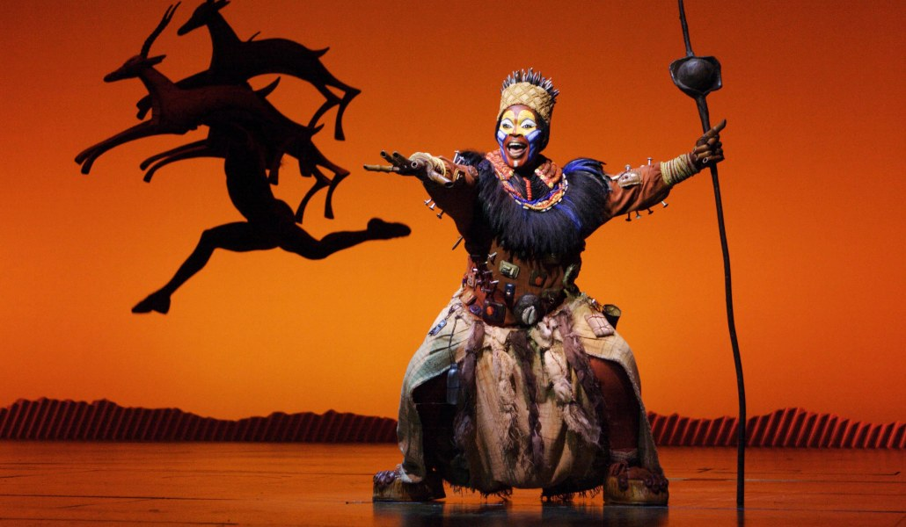

LA LUCHA DE MADRID POR SER UNA DE LAS CAPITALES MUNDIALES DEL TEATRO MUSICAL
La ciudad ha evolucionado en las últimas décadas y ya se está codeando con enclaves musicales históricos como Broadway o Londres

Madrid, si por algo es conocida, es por su rica diversidad que ofrece para todo aquel que acude a ella. Es una ciudad que alberga un amplio abanico de posibilidades a la hora de buscar los intereses de cada uno. Su rica historia, arquitectura y vida social, han hecho de Madrid un enclave turístico ideal para cualquier persona. Como no podía ser de otra manera, este crecimiento -exponencial en las últimas décadas- también ha estado presente en la música y el teatro.
EVOLUCIÓN
En los últimos años, la ciudad ha emergido como un epicentro para la escena teatral, particularmente en el género de los musicales. Este tipo de espectáculos, en los que se dan lugar artes como el baile, lo dramático y lo musical, han servido para dar un salto logarítmico a la afluencia cultural que acude a Madrid para ser testigo de los mejores espectáculos del mundo.
El teatro musical ha pasado de ser un género menor, que se producía en pequeñas salas y con escasa afluencia, a ser una de los mayores identificativos de la capital madrileña, manifestando en él a los principales artistas del panorama teatral y acogiendo a grandes cantidades de espectadores. Esto ha logrado convertir a la ciudad en un excelente reclamo turístico y comercial, en el que los grandes teatros no paran de albergar obras llegadas desde los principales enclaves musicales.
EL BROADWAY MADRILEÑO
Sirviéndose de precedentes exitosos como Broadway, Londres o Hamburgo, Madrid buscaba codearse con las principales capitales musicales para lograr asentarse y establecer un legado propio basado en la apuesta por el género musical. Como punto neurálgico nos encontramos con la Gran Vía de Madrid, lugar en el que residen los principales teatros nacionales y donde más variedad de obras teatrales y musicales podemos encontrar. La avenida más conocida del país ha sido el centro para la inserción de la música como imagen de la Madrid del siglo XXI.
No es de extrañar que, desde la pandemia, Madrid lo haya estado logrando. Tras estos años, la capital ha conseguido ascender a ser la tercera ciudad con más musicales del mundo, solo por detrás de Nueva York y Londres. Esto corrobora la gran apuesta de Madrid por el crecimiento musical, y el posterior éxito que esto ha traído consigo.
PARA TODOS LOS PÚBLICOS
La escena musical madrileña es diversa y amplia para cualquier tipo de público. En ella se erigen producciones que van desde lo clásico, hasta las últimas invenciones de la evolución musical. Algunos de los teatros más icónicos de los que hablamos podrían ser el Teatro Rialto, el Teatro Lope de Vega, el Teatro Victoria, el Teatro Coliseum, el Teatro Príncipe o el Teatro Apolo. En ellos, los amantes del género musical han podido ser testigos de obras atemporales como “El Rey León”, “Mamma Mia!” y “Billy Elliot”. Estos tres han sido ejemplos de impacto significativo en la concepción de Madrid como capital musical.
Una característica destacada de la escena de los musicales en Madrid es la insistencia en la búsqueda del talento local, y la apuesta por él. Muchos artistas españoles se han hecho hueco en los principales escenarios de la Gran Vía madrileña, y han brillado interpretando papeles principales y contribuyendo a la calidad artística de las producciones. Este enfoque por el talento propio ha dado a Madrid una identidad única y señorial, que le ha permitido deslumbrar tanto a nivel nacional como internacional.
La llegada de tanto musical no solo genera beneficio a la cultura de la ciudad, también lo hace dejando huella en los principales negocios cercanos. La afluencia constante de amantes del teatro ha contribuido al impulso de la economía local, aportando a restaurantes, hoteles y tiendas de souvenirs. Además, esto va unido a un creciente apoyo del turismo, convirtiendo a Madrid como un destino de primer nivel para los amantes de la buena música.
HACIA UN FUTURO EXITOSO
Algo que ha sabido aprovechar la ciudad ha sido la búsqueda por la innovación y por amoldarse a los principales demandantes de los nuevos tiempos. Los grandes teatros madrileños albergan una tecnología muy avanzada, los espectáculos incluyen efectos visuales sorprendentes y las escenografías consiguen elevar la experiencia teatral a niveles jamás vistos. Toda aportación significativa hacia la causa ha sido clave para poder ampliar el impacto en el género y su adaptación a los nuevos espectadores.
Que Madrid haya alcanzado cotas de tan alta expectación no es ninguna casualidad. Simplemente es fruto del gran trabajo que se ha venido haciendo a lo largo de todos estos años, en los que se ha tomado como referencia a los principales ejemplos de éxito, y con los que se ha trabajado para conseguir adaptarlos y aportarles la seña de identidad propia de Madrid. Pero esto no se quedará en un simple logro, pues la consecución del éxito se debe mantener y la clave ahora reside en buscar que este crecimiento no se quede en una etapa, sino que logre perdurar en el tiempo.
Por eso, la escena musical se enfrenta ahora a grandes desafíos, como la competencia con otras formas de entretenimiento y la necesidad de mantener un producto fresco y relevante. El teatro y los musicales avanzan al mismo tiempo que lo hace la sociedad, y el papel que este encuentra en la cultura y la economía de la ciudad alegan por un futuro esperanzador y próspero.